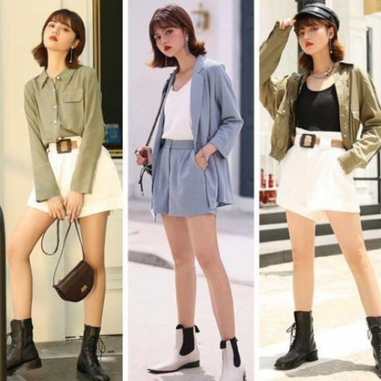
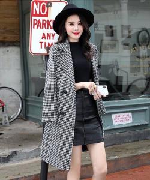
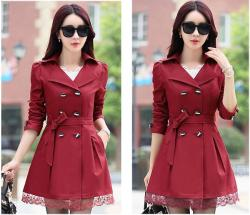
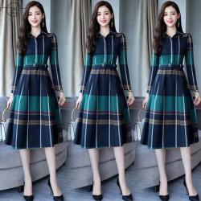
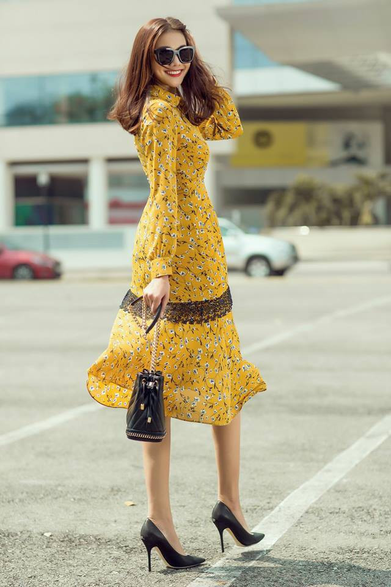

MB Store
Enjoy your shopping
Home
Product
Skirt
Jewels
Hand bag
News
About us
Contact
0

The products of Bexy women's clothing store are always made from the best fabrics on the market. Ensure that customers will always feel most comfortable when using the pants and shirts purchased at Shop Madam's.

The combination with the best fabrics and a unique and personal fashion design style on all products of Madam's Women's Fashion Shop. Madam's women's tops and pants will make you the brightest star in every room you walk into.

Orders placed at Shop Madam's are processed quickly and shipped to customers across the country. We use the services of Economy Delivery and Fast Delivery to get our products to our customers as quickly as possible.

Creativity and comfort are what fashion trends 2021 promises to bring to us in the near future. Trends such as random colors, baby doll dresses, spacious culottes, etc. are expected to continue to be promoted by fashionistas. Let's explore with TOKYO KEI the fashion trends that will be present and are expected to "create storms" in the coming 2021.

Of course, women's wool dresses are gorgeous, shimmery and show off your body curves, women's high-end wool dresses prioritize convenience, comfort, personal taste and absorbent fabrics. . But in these sunny days, a little transformation with beautiful and warm dresses is a great choice.
Revealing how to mix vintage clothes for a simple but beautiful "chubby" girl How to mix vintage clothes for fat people is a fashion issue that many girls are constantly learning about. Bringing the sound of classic from the old times, the legendary retro style mixes with a bit of classicism and a bit of modernity on each gentle design line that will help chubby, round girls become elegant. escape, more balanced.
Women's shirts today have different designs and styles for women to choose from. Besides, it is also focused on the physique and style of the wearer. Girls who are a bit thin should choose for themselves hot colors that are somewhat fresh and suitable for young people's style.
Fall and winter fashion has always been a big concern for our sisters over the years. Because this is the time for you to dress up in beautiful long, warm woolen dresses and hide behind layers of sweaters that look very Korean. For ladies and gentlemen, you definitely know right away that this year's autumn-winter trend cannot be different from the beautiful autumn-winter dress of the sisters in 2021.
 Home
Home Product
Product  News
News About
us
About
us Contact
Contact